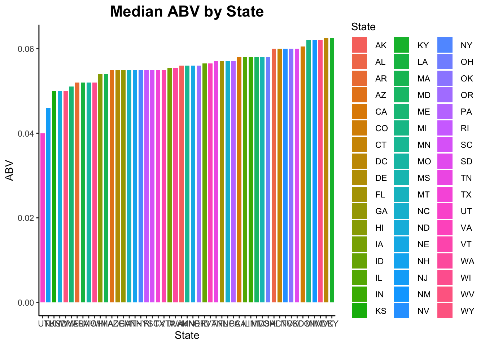
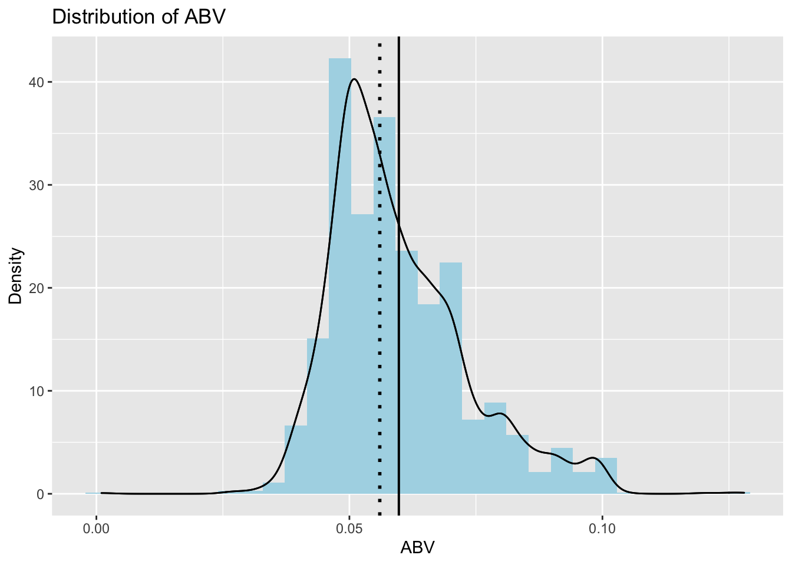
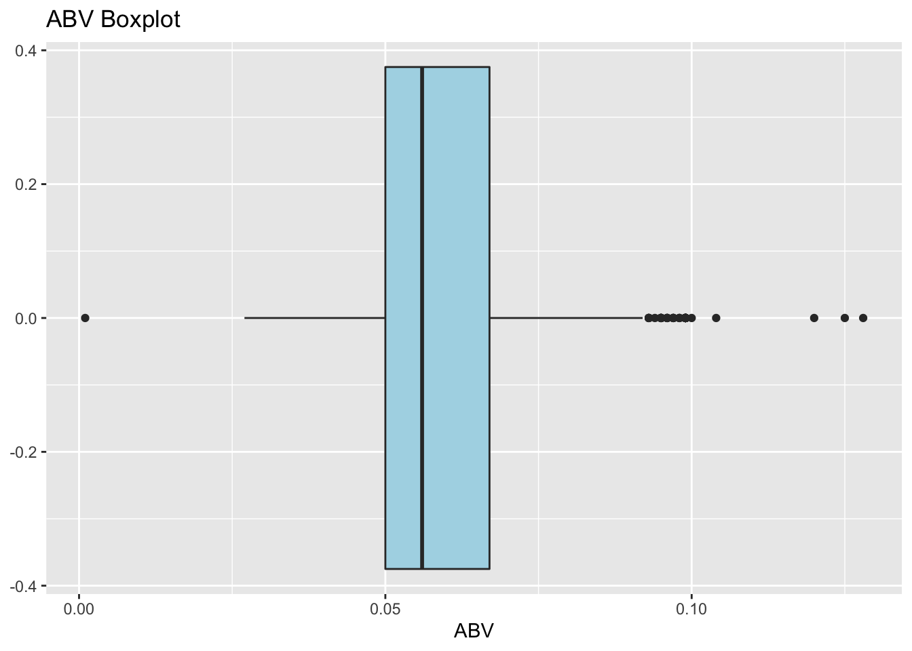
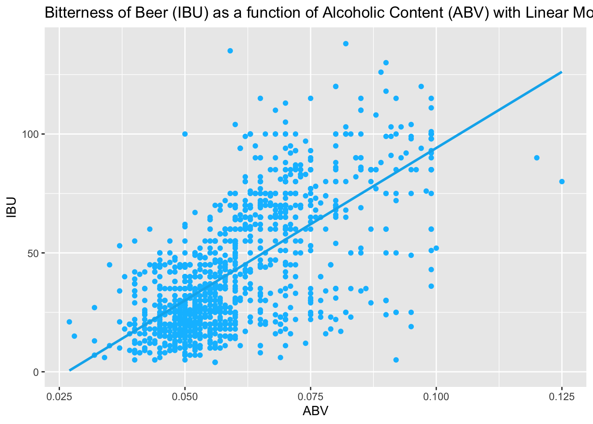
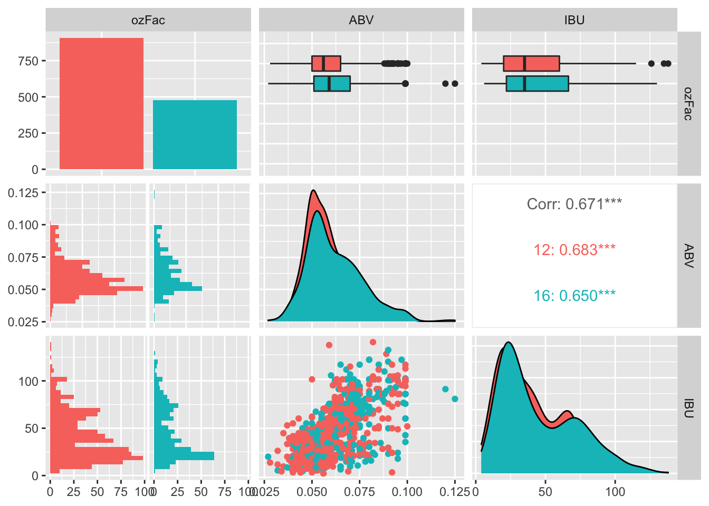

Project 1 (DS 6306)
Nnenna Okpara & Halle Purdom
3/06/2021
#Introduction The goal of this analysis is to evaluate the US Breweries and Beers supplied by Budweiser with the goal of addressing all the given analysis questions in a comprehensive, accurate manner. The following R code is organized in order of question and includes the full question, a brief description of the code chunk, the code, and a response to the analysis question. All code output including graphs are produced under the code chunk and are also present in the powerpoint slides. The file will begin with loading needed libraries and data import, and data manipulation and solutions will follow in the questions.
#Loaded libraries
library(ggplot2)
library(naniar)
library(tidyr)
library(tidyverse)
library(plyr)
library(GGally)
library(ggthemes)
library(dplyr)
library(caret)
library(class)
library(e1071)
library(tm)
library(plotly)#Data Import and Manipulation Importing the Beer and Brewery data supplied.
Breweries<- read.csv(file = "/Users/hallepurdom/RStudio Projects/MSDS_6306_Doing-Data-Science/Unit 8 and 9 Case Study 1/Breweries.csv", header= TRUE)
Beers<- read.csv(file = "/Users/hallepurdom/RStudio Projects/MSDS_6306_Doing-Data-Science/Unit 8 and 9 Case Study 1/Beers.csv", header= TRUE)Question 1
How many breweries are in each state?
The following couple code chunks use the state column to add up all breweries per state then graph those values in a boxplot with the states ordered by number of brewery.
#To check if state is a factor
str(Breweries)## 'data.frame': 558 obs. of 4 variables:
## $ Brew_ID: int 1 2 3 4 5 6 7 8 9 10 ...
## $ Name : chr "NorthGate Brewing " "Against the Grain Brewery" "Jack's Abby Craft Lagers" "Mike Hess Brewing Company" ...
## $ City : chr "Minneapolis" "Louisville" "Framingham" "San Diego" ...
## $ State : chr " MN" " KY" " MA" " CA" ...head(Breweries)## Brew_ID Name City State
## 1 1 NorthGate Brewing Minneapolis MN
## 2 2 Against the Grain Brewery Louisville KY
## 3 3 Jack's Abby Craft Lagers Framingham MA
## 4 4 Mike Hess Brewing Company San Diego CA
## 5 5 Fort Point Beer Company San Francisco CA
## 6 6 COAST Brewing Company Charleston SC# count the number of breweries per state
brewery_per_state = Breweries %>% count("State")
brewery_per_state## State freq
## 1 AK 7
## 2 AL 3
## 3 AR 2
## 4 AZ 11
## 5 CA 39
## 6 CO 47
## 7 CT 8
## 8 DC 1
## 9 DE 2
## 10 FL 15
## 11 GA 7
## 12 HI 4
## 13 IA 5
## 14 ID 5
## 15 IL 18
## 16 IN 22
## 17 KS 3
## 18 KY 4
## 19 LA 5
## 20 MA 23
## 21 MD 7
## 22 ME 9
## 23 MI 32
## 24 MN 12
## 25 MO 9
## 26 MS 2
## 27 MT 9
## 28 NC 19
## 29 ND 1
## 30 NE 5
## 31 NH 3
## 32 NJ 3
## 33 NM 4
## 34 NV 2
## 35 NY 16
## 36 OH 15
## 37 OK 6
## 38 OR 29
## 39 PA 25
## 40 RI 5
## 41 SC 4
## 42 SD 1
## 43 TN 3
## 44 TX 28
## 45 UT 4
## 46 VA 16
## 47 VT 10
## 48 WA 23
## 49 WI 20
## 50 WV 1
## 51 WY 4#Adding names to the brewery_per_state data
names(brewery_per_state) = c("State", "count")#Plotting the number of breweries in each state for visualization
brewery_per_state %>% ggplot(aes(x=reorder(State,count), y=count, fill=State)) + geom_bar(stat="identity", show.legend = FALSE) + labs(x ="State",y="Number of Breweries",title="Number of Breweries per State in the US") + theme_classic()+ theme(axis.text.x = element_text(angle = 60, hjust = 1,size = 6)) Colorado and California are the two states with the highest number of Breweries which are 39 and 47. While DC and North Dakota are the two states with the lowest number of Breweries with 1 respectively
Colorado and California are the two states with the highest number of Breweries which are 39 and 47. While DC and North Dakota are the two states with the lowest number of Breweries with 1 respectively
#Question 2 Merge beer data with the breweries data. Print the first 6 observations and the last six observations to check the merged file
The following code chunk merges Beer.csv and Breweries.csv into one data frame, then renames columns to have titles descriptive of column content.
#Check data names for Breweries and Beers
names(Breweries)## [1] "Brew_ID" "Name" "City" "State"names(Beers)## [1] "Name" "Beer_ID" "ABV" "IBU" "Brewery_id" "Style" "Ounces"#Merge the datasets
BreweriesandBeers = merge(x=Beers, y=Breweries, by.x ="Brewery_id", by.y="Brew_ID")
#Cleaning up variable names
names (BreweriesandBeers) = c("Brewery_id","Beer_Name","Beer_ID","ABV","IBU","Beer_Style","Beer_OZ","Brewery_Name","Brewery_City","Brewery_State")
str(BreweriesandBeers)## 'data.frame': 2410 obs. of 10 variables:
## $ Brewery_id : int 1 1 1 1 1 1 2 2 2 2 ...
## $ Beer_Name : chr "Get Together" "Maggie's Leap" "Wall's End" "Pumpion" ...
## $ Beer_ID : int 2692 2691 2690 2689 2688 2687 2686 2685 2684 2683 ...
## $ ABV : num 0.045 0.049 0.048 0.06 0.06 0.056 0.08 0.125 0.077 0.042 ...
## $ IBU : int 50 26 19 38 25 47 68 80 25 42 ...
## $ Beer_Style : chr "American IPA" "Milk / Sweet Stout" "English Brown Ale" "Pumpkin Ale" ...
## $ Beer_OZ : num 16 16 16 16 16 16 16 16 16 16 ...
## $ Brewery_Name : chr "NorthGate Brewing " "NorthGate Brewing " "NorthGate Brewing " "NorthGate Brewing " ...
## $ Brewery_City : chr "Minneapolis" "Minneapolis" "Minneapolis" "Minneapolis" ...
## $ Brewery_State: chr " MN" " MN" " MN" " MN" ...head(BreweriesandBeers, 6)## Brewery_id Beer_Name Beer_ID ABV IBU Beer_Style Beer_OZ Brewery_Name
## 1 1 Get Together 2692 0.045 50 American IPA 16 NorthGate Brewing
## 2 1 Maggie's Leap 2691 0.049 26 Milk / Sweet Stout 16 NorthGate Brewing
## 3 1 Wall's End 2690 0.048 19 English Brown Ale 16 NorthGate Brewing
## 4 1 Pumpion 2689 0.060 38 Pumpkin Ale 16 NorthGate Brewing
## 5 1 Stronghold 2688 0.060 25 American Porter 16 NorthGate Brewing
## 6 1 Parapet ESB 2687 0.056 47 Extra Special / Strong Bitter (ESB) 16 NorthGate Brewing
## Brewery_City Brewery_State
## 1 Minneapolis MN
## 2 Minneapolis MN
## 3 Minneapolis MN
## 4 Minneapolis MN
## 5 Minneapolis MN
## 6 Minneapolis MNtail(BreweriesandBeers, 6)## Brewery_id Beer_Name Beer_ID ABV IBU Beer_Style Beer_OZ
## 2405 556 Pilsner Ukiah 98 0.055 NA German Pilsener 12
## 2406 557 Heinnieweisse Weissebier 52 0.049 NA Hefeweizen 12
## 2407 557 Snapperhead IPA 51 0.068 NA American IPA 12
## 2408 557 Moo Thunder Stout 50 0.049 NA Milk / Sweet Stout 12
## 2409 557 Porkslap Pale Ale 49 0.043 NA American Pale Ale (APA) 12
## 2410 558 Urban Wilderness Pale Ale 30 0.049 NA English Pale Ale 12
## Brewery_Name Brewery_City Brewery_State
## 2405 Ukiah Brewing Company Ukiah CA
## 2406 Butternuts Beer and Ale Garrattsville NY
## 2407 Butternuts Beer and Ale Garrattsville NY
## 2408 Butternuts Beer and Ale Garrattsville NY
## 2409 Butternuts Beer and Ale Garrattsville NY
## 2410 Sleeping Lady Brewing Company Anchorage AK#Question 3 Address the missing values in each column.
The following code chunk checks all columns in the merged data frame for missing data.
#Check for missing values
miss_var_summary(BreweriesandBeers)## # A tibble: 10 x 3
## variable n_miss pct_miss
## <chr> <int> <dbl>
## 1 IBU 1005 41.7
## 2 ABV 62 2.57
## 3 Brewery_id 0 0
## 4 Beer_Name 0 0
## 5 Beer_ID 0 0
## 6 Beer_Style 0 0
## 7 Beer_OZ 0 0
## 8 Brewery_Name 0 0
## 9 Brewery_City 0 0
## 10 Brewery_State 0 0gg_miss_var(BreweriesandBeers, show_pct = TRUE)
The table and plot above shows the number of missing values (NA) in each column. There are only two variables with missing values. ABV is missing 62 values while IBU is missing 1005 values
#Question 4 Compute the median alcohol content and international bitterness unit for each state. Plot a bar chart to compare.
The following filters out all missing data, then graphs the median ABV and IBU per state in a bar plot in order of increasing value.
#Median alcohol content (ABV)
##We will first remove the NA's from the ABV
ABV_State = na.omit("ABV")
##Calculate the Median ABV
ABV_State = BreweriesandBeers %>% group_by(Brewery_State) %>% summarise(median=median(ABV,na.rm=TRUE))
ABV_State## # A tibble: 51 x 2
## Brewery_State median
## * <chr> <dbl>
## 1 " AK" 0.056
## 2 " AL" 0.06
## 3 " AR" 0.052
## 4 " AZ" 0.055
## 5 " CA" 0.058
## 6 " CO" 0.0605
## 7 " CT" 0.06
## 8 " DC" 0.0625
## 9 " DE" 0.055
## 10 " FL" 0.057
## # … with 41 more rows##Clean up the names
names(ABV_State) = c("State","MedianABV")
##Plot graphs
ABV_State %>% ggplot(aes(x=reorder(State,MedianABV), y=MedianABV, fill=State)) + geom_bar(stat="identity", width = 0.75) + labs(x ="State",y="ABV",title="Median ABV by State") + theme_classic()+ theme(plot.title = element_text(size = 16,face= "bold",hjust = 0.5))
#international bitterness unit (IBU)
##We will first remove the NA's from the IBU
IBU_State = na.omit("IBU")
##Calculate the Median IBU
IBU_State = BreweriesandBeers %>% group_by(Brewery_State) %>% summarise(median=median(IBU,na.rm=TRUE))
IBU_State## # A tibble: 51 x 2
## Brewery_State median
## * <chr> <dbl>
## 1 " AK" 46
## 2 " AL" 43
## 3 " AR" 39
## 4 " AZ" 20.5
## 5 " CA" 42
## 6 " CO" 40
## 7 " CT" 29
## 8 " DC" 47.5
## 9 " DE" 52
## 10 " FL" 55
## # … with 41 more rows##Clean up the names
names(IBU_State) = c("State","MedianIBU")
##Plot graph
IBU_State %>% ggplot(aes(x=reorder(State,MedianIBU), y=MedianIBU, fill=State)) + geom_bar(stat="identity", width = 0.75) + labs(x ="State",y="IBU",title="Median IBU by State") + theme_classic()+ theme(plot.title = element_text(size = 16,face= "bold",hjust = 0.5))## Warning: Removed 1 rows containing missing values (position_stack). The Median Alcohol content (ABV) by State bar chart shows that Kentucky (KY) has the highest median ABV while Utah (UT) has the lowest median ABV. The International bitterness unit (IBU) bar chart shows that Maine (ME) has the highest median IBU value while Wisconsin (WI) has the lowest median IBU value
The Median Alcohol content (ABV) by State bar chart shows that Kentucky (KY) has the highest median ABV while Utah (UT) has the lowest median ABV. The International bitterness unit (IBU) bar chart shows that Maine (ME) has the highest median IBU value while Wisconsin (WI) has the lowest median IBU value
#Question 5 Which state has the maximum alcoholic (ABV) beer? Which state has the most bitter (IBU) beer?
The following creates three datasets filtering out different missing values: one filters missing IBU and ABV data datapoints, one only ABV datapoints, and one only IBU datapoints. Then the maximum ABV and IBU beer is found and the state of that beer is searched in the dataframe.
#Creating datasets with out missing values
merged_clean<-BreweriesandBeers%>%filter(!is.na(BreweriesandBeers$ABV), !is.na(BreweriesandBeers$IBU)) #beers without IBU or ABV values filtered out (1405)
abv_clean<-BreweriesandBeers%>%filter(!is.na(BreweriesandBeers$ABV)) #only beers without ABV values filtered out (2348)
ibu_clean<-BreweriesandBeers%>%filter(!is.na(BreweriesandBeers$IBU)) #only beers without IBU values filtered out (1405) (same as merged_clean because all beers missing ABV value also were missing IBU value)
#Max ABV -- beers without ABV values filtered out
max(abv_clean$ABV) ## [1] 0.128which.max(abv_clean$ABV) ## [1] 369abv_clean$Brewery_State[369] ## [1] " CO"abv_clean$Beer_Name[369] ## [1] "Lee Hill Series Vol. 5 - Belgian Style Quadrupel Ale"abv_clean$IBU[369] ## [1] NA#Max IBU from Total Data -- beers without IBU values filtered out
max(ibu_clean$IBU) ## [1] 138which.max(ibu_clean$IBU) ## [1] 1134ibu_clean$Brewery_State[1134] ## [1] " OR"ibu_clean$Beer_Name[1134] ## [1] "Bitter Bitch Imperial IPA"ibu_clean$ABV[1134] ## [1] 0.082To find the beer with the highest ABV, only the beers with missing ABV values were removed from the data. To find the beer with the most IBU, only the beers with missing IBU values were removed from the data.
The state with the maximum alcoholic (ABV) beer is Colorado, with the Lee Hill Series Vol. 5 - Belgian Style Quadrupel Ale at 0.128. The state with the most bitter (IBU) beer is Oregon, with the Bitter Bitch Imperial IPA at 138.
#Question 6 Comment on the summary statistics and distribution of the ABV variable.
In the following, the summary statistics (min, 1st quartile, median, mean, 3rd quartile, and max) are calculated. Then the standard deviation, range, variance, and sample size are extracted. A boxplot and histogram/plot are generated for the ABV variable to check distribution.
summary(abv_clean$ABV)## Min. 1st Qu. Median Mean 3rd Qu. Max.
## 0.00100 0.05000 0.05600 0.05977 0.06700 0.12800sd(abv_clean$ABV) #standard deviation## [1] 0.01354173range(abv_clean$ABV) #range## [1] 0.001 0.128var(abv_clean$ABV) #variance## [1] 0.0001833786dim(abv_clean) #beers without ABV values filtered out (total data minus 62 missing values)## [1] 2348 10abv_clean%>%ggplot(aes(x=ABV))+geom_histogram(fill="lightblue", aes(y=..density..))+geom_density(alpha=.5)+geom_vline(xintercept = .05600, linetype="dotted", size=1, show.legend=TRUE)+ylab("Density")+ggtitle("Distribution of ABV")+geom_density(alpha=.5)+geom_vline(xintercept = .05977,linetype="solid", size=.7,show.legend=TRUE)## `stat_bin()` using `bins = 30`. Pick better value with `binwidth`.
abv_clean%>%ggplot(aes(x=ABV))+geom_boxplot(fill="lightblue")+ggtitle("ABV Boxplot")
which.max(density(abv_clean$ABV)$y)## [1] 207density(abv_clean$ABV)$x[207]## [1] 0.05079231When looking at the ABV summary statistics and distribution, only the beers missing an ABV value were removed from the data.
There were 2348 beers in this data, and they had a median of 0.056 and a mean of 0.060. The range of the data was from 0.001 min to 0.128 max, with a standard deviation of 0.014. When looking at the shape of the distribution, the center of the boxplot is slightly to the left with many outliers around the maximum ABV. The histogram/density graph’s peak was left of center with the median then mean to the right of the peak. Both of these observations suggest the data almost follows a normal distribution but has a slight right skew.
The data being almost normally distributed means most of the beers have alcohol levels centered around 0.051, and as ABV gets farther from that peak, less beers will have that ABV. The slight right skew in the data can be interpreted to mean that more beers have an ABV above the histogram’s peak of 0.051 than have an ABV below the peak.
#Question 7 Is there an apparent relationship between the bitterness of the beer and its alcoholic content? Draw a scatter plot. Make your best judgment of a relationship and EXPLAIN your answer.
A scatterplot and linear model are generated plotting IBU as a function of ABV to visualize their relationship.
merged_clean%>%ggplot(aes(x=ABV,y=IBU))+geom_point(color="deepskyblue")+geom_smooth(color="deepskyblue2", method=lm,se=FALSE)+ggtitle("Bitterness of Beer (IBU) as a function of Alcoholic Content (ABV) with Linear Model")## `geom_smooth()` using formula 'y ~ x' All beers with missing IBU or ABV values were filtered from the data, leaving 1,405 beers. The scatterplot and linear model shows IBU as a function of ABV. Based on the graphs there is an apparent positive correlation between the two variables. This could be because beers similar in ABV and IBU taste better to the consumer or because alcohol level and bitterness are dependent on each other.
#Question 8 Budweiser would also like to investigate the difference with respect to IBU and ABV between IPAs (India Pale Ales) and other types of Ale (any beer with “Ale” in its name other than IPA). You decide to use KNN classification to investigate this relationship. Provide statistical evidence one way or the other. You can of course assume your audience is comfortable with percentages … KNN is very easy to understand conceptually.In addition, while you have decided to use KNN to investigate this relationship (KNN is required) you may also feel free to supplement your response to this question with any other methods or techniques you have learned. Creativity and alternative solutions are always encouraged.
First, a new column is created and each beer is labeles as either Ale, IPA, or
#creating a dataset with added column classifying as IPA, Ale, or <NA> in IorA column
Classified<-merged_clean %>% mutate(IorA = case_when(grepl("IPA", merged_clean$Beer_Style)~"IPA",
grepl("Ale", merged_clean$Beer_Style)~"Ale"
))
#checking if English India Pale Ale (IPA) was classified as Ale or IPA
Classified%>%filter(Classified$Beer_Style == "English India Pale Ale (IPA)")## Brewery_id Beer_Name Beer_ID ABV IBU Beer_Style Beer_OZ
## 1 54 Moar 2558 0.044 44 English India Pale Ale (IPA) 12
## 2 108 Farmer Wirtz India Pale Ale 1549 0.070 94 English India Pale Ale (IPA) 16
## 3 216 Brutus 2116 0.071 69 English India Pale Ale (IPA) 12
## 4 269 Long Trail IPA 1926 0.059 42 English India Pale Ale (IPA) 12
## 5 279 Lost Sailor IPA 1900 0.055 40 English India Pale Ale (IPA) 12
## 6 438 East India Pale Ale 1279 0.068 47 English India Pale Ale (IPA) 16
## 7 438 East India Pale Ale 566 0.068 47 English India Pale Ale (IPA) 12
## Brewery_Name Brewery_City Brewery_State IorA
## 1 Bent Brewstillery Roseville MN IPA
## 2 Bonfire Brewing Company Eagle CO IPA
## 3 Texian Brewing Co. Richmond TX IPA
## 4 Long Trail Brewing Company Bridgewater Corners VT IPA
## 5 Berkshire Brewing Company South Deerfield MA IPA
## 6 Brooklyn Brewery Brooklyn NY IPA
## 7 Brooklyn Brewery Brooklyn NY IPA#Creating dataset with only IPAs and Ales (filtering out any <NA> value in IorA column)
Classified2<- filter(Classified,IorA == "IPA" | IorA == "Ale")
Classified%>%ggplot(aes(x=ABV, y=IBU, color=Classified$IorA))+geom_point()+ggtitle("Bitterness of Beer (IBU) as a function of Alcoholic Content (ABV)")## Warning: Use of `Classified$IorA` is discouraged. Use `IorA` instead.
Classified2%>%ggplot(aes(x=ABV, y=IBU, color=Classified2$IorA))+geom_point()+ggtitle("IPAs and Ales: Bitterness of Beer (IBU) as a function of Alcoholic Content (ABV)")+labs(color='Beer Type') ## Warning: Use of `Classified2$IorA` is discouraged. Use `IorA` instead.
#knn classification-- finding the best k
splitPerc = .70 #splitting train/test sets by 70/30
iterations = 100 #running 100 times
numks = 90 #checking k values 1-90
masterAcc = matrix(nrow = iterations, ncol = numks)
for(j in 1:iterations)
{
trainIndices = sample(1:dim(Classified2)[1],round(splitPerc * dim(Classified2)[1]))
train = Classified2[trainIndices,] #train set
test = Classified2[-trainIndices,] #test set
for(i in 1:numks)
{
classifications = knn(train[,c(4,5)],test[,c(4,5)],train$IorA, prob = TRUE, k = i)
table(classifications,test$IorA)
CM = confusionMatrix(table(classifications,test$IorA))
masterAcc[j,i] = CM$overall[1]
}
}
MeanAcc = colMeans(masterAcc)
plot(seq(1,numks,1),MeanAcc, type = "l", main="Mean Accuracy of KNN Classification with k = 1-90", xlab="K", ylab="Mean Accuracy") #plotting data for accuracy as a function of k value
which.max(MeanAcc) # finding max accuracy on plot (best k=5)## [1] 5#confusion matrix for k=5
classifications = knn(train[,c(4,5)],test[,c(4,5)],train$IorA, prob = TRUE, k = 5)
table(classifications,test$IorA)##
## classifications Ale IPA
## Ale 141 28
## IPA 18 96CM = confusionMatrix(table(classifications,test$IorA))
CM## Confusion Matrix and Statistics
##
##
## classifications Ale IPA
## Ale 141 28
## IPA 18 96
##
## Accuracy : 0.8375
## 95% CI : (0.7892, 0.8785)
## No Information Rate : 0.5618
## P-Value [Acc > NIR] : <2e-16
##
## Kappa : 0.6669
##
## Mcnemar's Test P-Value : 0.1845
##
## Sensitivity : 0.8868
## Specificity : 0.7742
## Pos Pred Value : 0.8343
## Neg Pred Value : 0.8421
## Prevalence : 0.5618
## Detection Rate : 0.4982
## Detection Prevalence : 0.5972
## Balanced Accuracy : 0.8305
##
## 'Positive' Class : Ale
## First to look at the relationship between Ales and IPAs with respect to ABV and IBU a separate column was created and the beers were grouped by their style/type into ALe, IPA, or other. Then a scatterplot was produced giving the impression that Ales were generally located in the lower IPA and lower ABV range while IPAs were generally located in the higher ABV and IBU range.
Next, a knn classifier was created to further investigate this relationship. Knn classifies a given datapoint based on the classifications of the points nearest to it. So if Ales and IPAs tended to group together on a scatterplot of the data, the classification should have a higher accuracy. First the best k value was found from testing values 1-90 with 70 percent of the data training the classifier and 30 percent of the data being tested by the classifier. It was found 5 is the best k, and the 5nn classifier was classifying beer style with 87 percent accuracy. The sensitivity, or true positive rate, was 91 percent and the specificity, or true negative rate, was 82 percent. Because the knn classifier was fairly accurate, we can conclude that Ales and IPAs can be classified based on their ABV and IBU values, and these two styles generally cluster together in a scatterplot.
#Question 9 Knock their socks off! Find one other useful inference from the data that you feel Budweiser may be able to find value in. You must convince them why it is important and back up your conviction with appropriate statistical evidence.
The following shows 12-ounce and 16-ounce beer compared with respect to ABV and IBU data. A density plot of IBU was also generated to look more at the distribution.
#adding column for Ounces as a factor
merged_clean$ozFac <- as.factor(merged_clean$Beer_OZ)
summary(merged_clean$ozFac) #seeing most of data is either 12 or 16 ounces (only 20 beers outside of those factors)## 8.4 12 16 16.9 19.2 24 32
## 1 906 479 1 8 7 3#creating dataset filtering out the 20 beers that aren't 12 or 16 ounces
filtered9 <-filter(merged_clean, ozFac == "12"| ozFac == "16")
filtered9%>%ggplot(aes(x=IBU, fill=filtered9$ozFac))+geom_density(alpha=.5)+labs(fill='Beer Size (Ounces)')+ggtitle("Density plots of IBU grouped by Beer Size")+ylab("Density")## Warning: Use of `filtered9$ozFac` is discouraged. Use `ozFac` instead.
merged_clean %>% filter(ozFac == "12"| ozFac == "16")%>%select(ozFac, ABV, IBU)%>% ggpairs(aes(color=ozFac))## `stat_bin()` using `bins = 30`. Pick better value with `binwidth`.
## `stat_bin()` using `bins = 30`. Pick better value with `binwidth`. Beers missing ABV and IBU data were filtered from this analysis.
In the data, the majority of the beers were either 12-ounce size or 16-ounce size. To explore this, we created boxplots, density plots, histograms, and bar graphs to look at the relationships between size, ABV, and IBU. Overall, the 16-punce beers ABV and IBU variable were slightly higher than the 12-ounce ABV and IBU distribution. This means a 16-ounce beer will have a higher chance of having an alcohol level and bitterness rating higher than a 12-ounce beer.
From these graphs, the IBU variable also appeared to have a similar distribution to the ABV vairable explored previously in Question 6. A noteable difference is that the IBU density plots had two peaks rather than one. The largest peak at around 25 is where most of the beers are clustered, but there is also a smaller notable peak around 65, so a significant number of beers will also have bitterness ratings at and close to 65.
#Conclusion In conclusion we were able to explore states with the most breweries in the United States. We also explored the relationship between IBU and ABV values. IBU and ABV values both have a positive relationship. When looking into Ales vs. IPAs, it was found that IPAs generally had higher ABVs and IBUs while Ales had lower ABVs and IBUs. In comparing 16- and 12-ounce beers for ABV and IBU, the 16-ounce beers had slightly higher distribution of alcohol levels and bitterness ratings. Lastly, the IBU variable’s distribution had a double peak, meaning while most beers had IBUs clustered around 25, another smaller group of beers also clustered around 65.